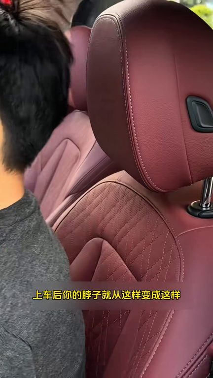
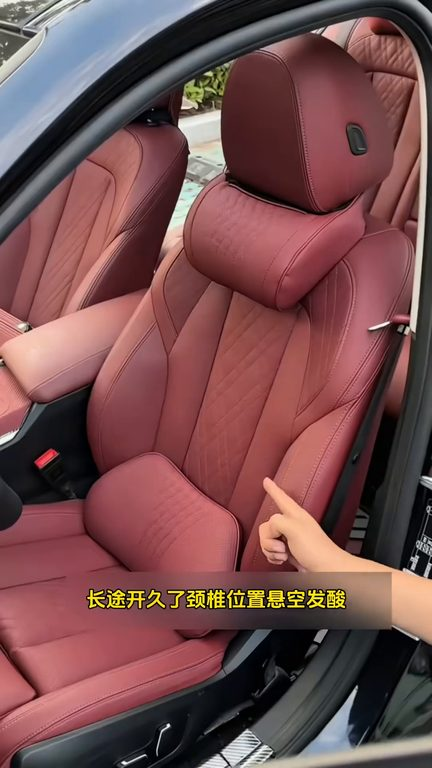
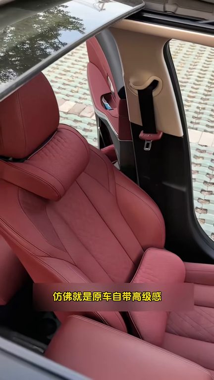
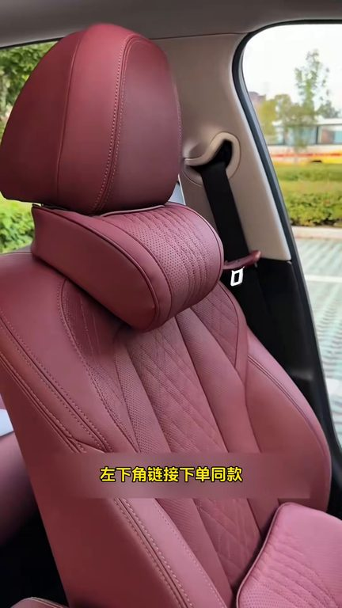

TOP 1 · 代表素材深度拆解
核心放量 稳健
视频为原始素材 HTTPS 链接；点击后加载，建议在网络环境良好时播放。
29.4万素材消耗
2.50%CTR
62.3%类目消耗占比
+0.36pp较类目均值
表现判断
该素材是类目内第 1 名，属于“核心放量”；CTR 高于类目均值。消耗体现承接规模，CTR 体现首屏与定向效率，两项应结合判断，不能仅以单指标下结论。
表达标签
口播三段式证据
开场钩子只需这样轻轻一放上车后你的脖子就从这样变成这样不管是正常开车还是停车休息都舒服多了
中段论证长途开久了景部位置总是玄空发酸这套专用的头枕一靠上去就像被温柔的双手稳稳拖住而且尺寸完美贴合座椅弧度以免添加高回弹记忆面软而不踏支撑到位自带崩带安装直接套上即可拉链可拆卸清洁的设计原车一样的皮革纹路
结尾转化一靠上去就像被温柔的双手稳稳拖住而且尺寸完美贴合座椅弧度以免添加高回弹记忆面软而不踏支撑到位自带崩带安装直接套上即可拉链可拆卸清洁的设计原车一样的皮革纹路仿佛就是原车自带高极感拉满座椅放平躺下睡觉时脖子再也不会像之前这样公道西歪了不管什么车型均可使用多种颜色可以选择左下角链接下单同款
有效点
- CTR 2.50% 高于类目均值 2.14%，开场或人群指向具备点击优势
- 包含使用或实测表达，能够把抽象卖点转化为可感知证据
迭代动作
- 保留当前高效钩子，复制 3 个变量版本：人物、首句和首帧分别单变量测试
- 中段每 5–8 秒补一次画面变化或证据点，避免同景口播造成信息疲劳
- 促销口径与资质信息保持同屏可验证，结尾只保留一个明确行动指令
合规关注

钩子建立 · 1.4s

场景/问题展开 · 10.7s

卖点证据 · 24.7s

转化收口 · 34.0s
查看完整口播摘要
只需这样轻轻一放上车后你的脖子就从这样变成这样不管是正常开车还是停车休息都舒服多了原车座椅中间是漏空设计长途开久了景部位置总是玄空发酸这套专用的头枕一靠上去就像被温柔的双手稳稳拖住而且尺寸完美贴合座椅弧度以免添加高回弹记忆面软而不踏支撑到位自带崩带安装直接套上即可拉链可拆卸清洁的设计原车一样的皮革纹路仿佛就是原车自带高极感拉满座椅放平躺下睡觉时脖子再也不会像之前这样公道西歪了不管什么车型均可使用多种颜色可以选择左下角链接下单同款